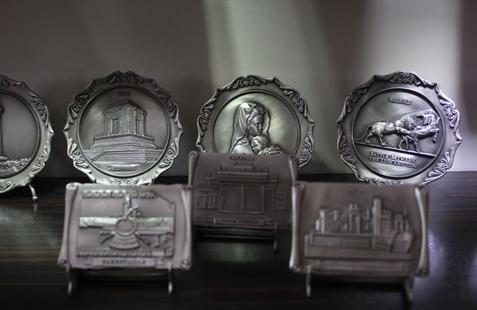

تابلوهای فلزی
آشنایی با تابلوهای فلزی
از ديـر بـاز هنـرمنـدان بـا حکــاکــي بــرروي ورقهــاي بــرنــز ومــس آثــار زيبــا و بــديعــي خلــق نموده اند.
فلزات به دليل تنوع رنگي و خاصيت فرمپذيري در قسمتهاي مختلفي از طراحي داخلي استفاده ميشود. تابلوهاي فلزي خصوصا نقشبرجستههاي فلزي كه جديدا وارد بازار دكوراسيون شدهاند، يكي از روشهاي استفاده از فلزات در طراحي داخلي است.
تابلوهاي فلزي جديدي است كه يك هنرمند با الهام از قديميترين و اصيلترين نقش و نگارهاي ايران آنها را خلق كرده است.
در اين نقشبرجستهها، هنرمند خلاق سعي كردهاست آثار سنتي را با فضاي مدرن زندگي امروز تطابق دهد.
